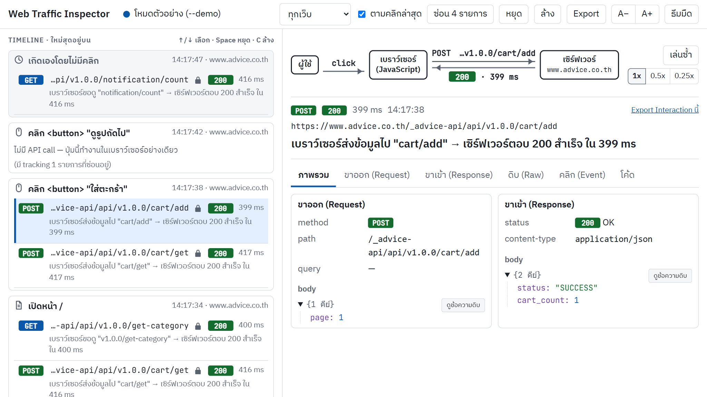
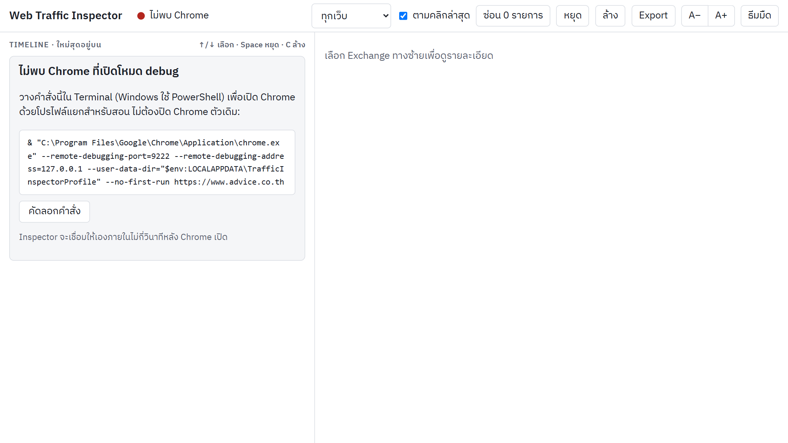
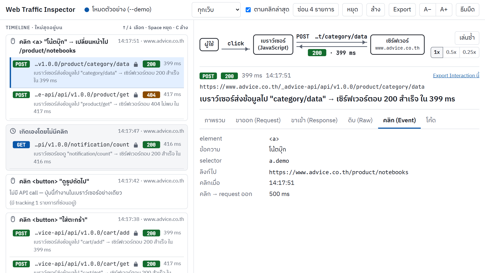
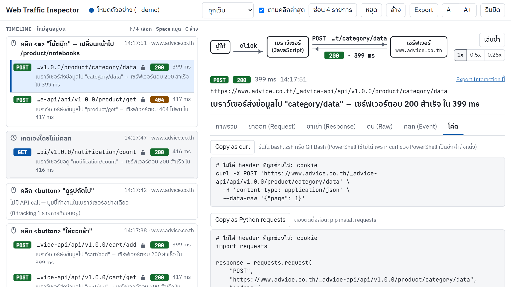
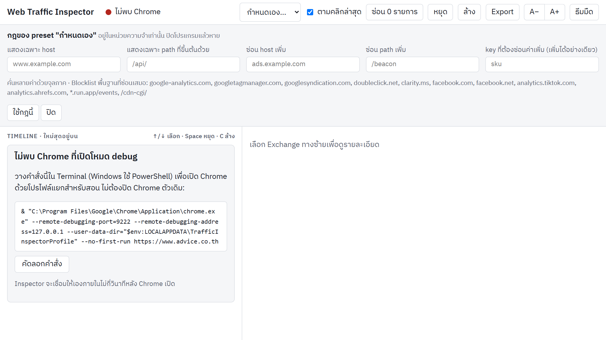
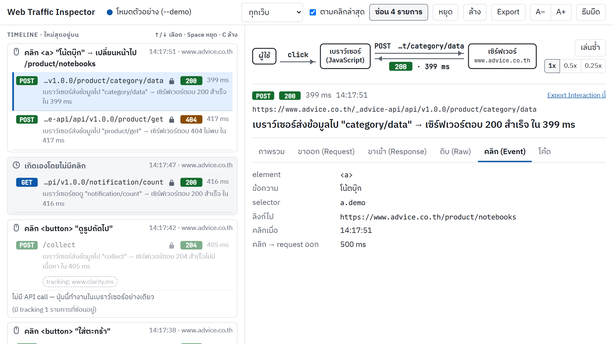

Web Traffic Inspector เป็นเครื่องมือสอนที่ต่อเข้ากับ Chrome ของผู้สอนผ่าน Chrome DevTools Protocol (CDP) แบบดูอย่างเดียว
แล้วแสดงสิ่งที่เกิดขึ้นเมื่อผู้ใช้คลิกบนเว็บ เป็นลำดับ คลิก → request → response ที่หน้า http://127.0.0.1:8000
•••• และปิดไม่ได้| คำ | ความหมาย |
|---|---|
| Exchange | request หนึ่งตัวคู่กับ response ของมัน (หนึ่งแถวใน Timeline) |
| Interaction | สาเหตุที่ทำให้เกิด Exchange: การคลิก, การเปิดหน้า หรือ "เกิดเองโดยไม่มีคลิก" (Background) |
| Timeline | คอลัมน์ซ้าย แสดง Interaction ใหม่สุดอยู่บน |
| Detail | คอลัมน์ขวา แสดงรายละเอียดของ Exchange ที่เลือก |
| Preset | ชุดกฎการกรอง ว่าจะแสดงเฉพาะเว็บไหน และซ่อนอะไร |
| Recording | ไฟล์ JSON ที่ได้จากปุ่ม Export ใช้เปิดดูย้อนหลังได้โดยไม่ต้องต่อ Chrome |
ต้องมี Python 3.11 ขึ้นไป และ Google Chrome แล้วเปิด Terminal ที่โฟลเดอร์ของโปรเจกต์
python -m venv .venv .venv\Scripts\Activate.ps1 pip install -r requirements.txt
ถ้าขึ้นว่า running scripts is disabled ตอนรัน Activate.ps1 ให้รันคำสั่งนี้ครั้งเดียวแล้วลองใหม่
Set-ExecutionPolicy -Scope CurrentUser RemoteSigned
python3 -m venv .venv source .venv/bin/activate pip install -r requirements.txt
playwright install เพราะ Inspector ใช้ Chrome ที่ติดตั้งอยู่ในเครื่อง ไม่ได้ดาวน์โหลดเบราว์เซอร์เพิ่มครั้งต่อไปที่จะใช้ ให้เปิด Terminal ที่โฟลเดอร์โปรเจกต์แล้วรันคำสั่ง activate (บรรทัดที่ 2 ด้านบน) ก่อนทุกครั้ง
scripts/start_chrome.bat, macOS ใช้ scripts/start_chrome.command
(ถ้า macOS ไม่ยอมเปิด ให้คลิกขวา → Open ในครั้งแรก หรือรัน chmod +x scripts/start_chrome.command)python -m inspector --launch-chrome (รวมขั้นที่ 1 และ 2 ในคำสั่งเดียว)python -m inspector # เชื่อม Chrome ที่เปิดไว้แล้ว python -m inspector --preset advice # เริ่มด้วย preset ของ advice.co.thโปรแกรมเปิดหน้า
http://127.0.0.1:8000 ให้อัตโนมัติ กด Ctrl+C ใน Terminal เพื่อปิดโปรแกรม
ถ้ารัน Inspector ก่อนเปิด Chrome หน้าจอจะแสดง "ไม่พบ Chrome ที่เปิดโหมด debug" พร้อมคำสั่งให้กด คัดลอกคำสั่ง ไปวางใน Terminal เมื่อ Chrome เปิดขึ้นมา Inspector จะเชื่อมต่อเองภายในไม่กี่วินาที

cart/add)GET/POST), path, status (200, 404 ...) และเวลาที่ใช้ พร้อมประโยคสรุปภาษาคน เช่น
เบราว์เซอร์ส่งข้อมูลไป "cart/add" → เซิร์ฟเวอร์ตอบ 200 สำเร็จ ใน 417 ms| สัญลักษณ์ | ความหมาย |
|---|---|
| 🔒 รูปกุญแจ | มีข้อมูลลับถูกซ่อนไว้ใน Exchange นี้ (แสดงเป็น ••••) |
| กรอบ "ไม่ได้ตรวจหาข้อมูลลับ" | body อ่านรูปแบบไม่ออก (เช่น text ธรรมดา, binary, JSON ที่ถูกตัด) จึงตรวจหาค่าลับไม่ได้ ควรดูก่อนแสดงหน้าห้อง |
| "รอคำตอบ…" | ส่ง request ไปแล้ว ยังไม่ได้ response |
| "failed" | ไม่ได้คำตอบ เช่น เน็ตหลุดหรือถูกยกเลิก |
| (มี tracking N รายการที่ซ่อนอยู่) | คลิกนี้มี request ไป analytics/tracking ที่ถูกซ่อนไว้ ดูได้ด้วยปุ่ม "ซ่อน N รายการ" |
cart/add, login, delete) มากกว่า request ที่แค่อ่านข้อมูล ถ้าเลือกแถวเองหรือเอาเครื่องหมายออก ระบบจะหยุดเลือกแทน| แท็บ | ใช้สอนอะไร |
|---|---|
| ภาพรวม | สรุปทั้งขาออกและขาเข้าในหน้าเดียว: method, path, query, body ที่ส่ง และ status, content-type, body ที่ได้กลับ |
| ขาออก (Request) | header, query, cookie และ body ของ request (ค่าลับเป็น ••••) body ที่เป็น JSON แสดงเป็นต้นไม้ กดพับ/กางได้ และกด "ดูข้อความดิบ" เพื่อดูแบบข้อความ |
| ขาเข้า (Response) | status, header และ body ของ response |
| ดิบ (Raw) | request และ response ในรูปแบบข้อความ HTTP ตามที่ส่งจริง (หลังซ่อนค่าลับแล้ว) |
| คลิก (Event) | element ที่ถูกคลิก, ข้อความบนปุ่ม, CSS selector, เวลาที่คลิก และระยะเวลาจากคลิกถึง request ออก |
| โค้ด | คัดลอก request นี้เป็น curl, Python requests หรือ fetch เพื่ออธิบายว่าเบราว์เซอร์ทำอะไร header ที่ถูกซ่อน (เช่น cookie) จะไม่ถูกใส่ลงในโค้ด |


curl ของ PowerShell เป็นอีกคำสั่งหนึ่ง| ปุ่ม | หน้าที่ |
|---|---|
| สถานะ (จุดสี) | เขียว "เชื่อมต่อแล้ว · N แท็บ" / แดง "ไม่พบ Chrome" / น้ำเงิน "Open Recording: ไฟล์" หรือ "โหมดตัวอย่าง (--demo)" ถ้า Chrome หลุดจะมีแถบเหลืองแจ้ง และเชื่อมใหม่เอง ข้อมูลเดิมไม่หาย |
| ช่องเลือก Preset | ทุกเว็บ / advice.co.th / กำหนดเอง… (ดูหัวข้อ 7) |
| ตามคลิกล่าสุด | ให้ Detail เลือก Exchange หลักของคลิกล่าสุดอัตโนมัติ |
| ซ่อน N รายการ | สลับแสดง/ไม่แสดง Exchange ที่ถูกซ่อน พร้อมเหตุผล |
| หยุด / เก็บต่อ | หยุดเก็บชั่วคราวระหว่างอธิบาย (ปุ่มลัด Space) |
| ล้าง | ลบข้อมูลทั้งหมดออกจากหน้าจอและหน่วยความจำ (ปุ่มลัด C) |
| Export | ดาวน์โหลดทุกอย่างที่เก็บไว้เป็นไฟล์ Recording (.json) |
| A− / A+ | ปรับขนาดตัวอักษร (สูงสุด 20 px) ให้คนท้ายห้องอ่านได้ |
| ธีมมืด | สลับธีมสว่าง/มืด |
| ↑ / ↓ | เลือก Exchange ก่อนหน้า/ถัดไปใน Timeline |
เว็บจริงมี request ไป analytics, โฆษณา และ tracking จำนวนมาก Inspector จึงซ่อนสิ่งที่ไม่เกี่ยวข้องให้ เพื่อให้เห็นเฉพาะ API ที่ควรสอน
all): แสดงทุกเว็บ ยกเว้น Blocklist พื้นฐานadvice): แสดงเฉพาะ API ของ advice.co.th ที่เหลือถือว่า "นอกโฟกัส"
| ช่อง | ตัวอย่าง / ความหมาย |
|---|---|
| แสดงเฉพาะ host | www.example.com แสดงเฉพาะ request ไปเว็บนี้ |
| แสดงเฉพาะ path ที่ขึ้นต้นด้วย | /api/ |
| ซ่อน host เพิ่ม / ซ่อน path เพิ่ม | ads.example.com, /beacon |
| key ที่ต้องซ่อนค่าเพิ่ม | sku ซ่อนค่าของ key นี้เพิ่มจากค่าลับมาตรฐาน (เพิ่มได้อย่างเดียว ลดไม่ได้) |
Preset แบบไฟล์อยู่ในโฟลเดอร์ presets/ (เช่น advice.json) ใช้ตอนเริ่มโปรแกรมด้วย --preset ชื่อไฟล์
กดปุ่ม ซ่อน N รายการ แถวที่ถูกซ่อนจะแสดงเป็นสีจางพร้อมป้ายเหตุผล เช่น tracking: region1.google-analytics.com หรือ นอกโฟกัส: preset advice
เหมาะกับการสอนว่าเว็บหนึ่งหน้าส่งข้อมูลไปที่อื่นมากแค่ไหน

/g/collect ไป google-analytics.json หรือกด Export Interaction นี้ ใน Detail เพื่อเอาเฉพาะคลิกเดียวpython -m inspector --replay-file รอบซ้อม.json
สถานะด้านบนจะขึ้นว่า Open Recording: <ชื่อไฟล์> และปุ่มหยุด/ล้างจะถูกซ่อน ถ้าไฟล์มาจาก Inspector รุ่นเก่า ระบบจะซ่อนค่าลับให้อีกรอบตอนเปิด
| Option | ค่าเริ่มต้น | ความหมาย |
|---|---|---|
--cdp-url | http://127.0.0.1:9222 | ที่อยู่ CDP ของ Chrome ที่จะดู |
--port | 8000 | พอร์ตของหน้า Inspector (เปิดเฉพาะ 127.0.0.1) |
--preset | all | Preset ตอนเริ่ม เช่น advice |
--window-ms | 1500 | ช่วงเวลาหลังคลิก (ms) ที่นับ Exchange เป็นผลของคลิกนั้น |
--max-exchanges | 500 | จำนวน Exchange สูงสุดในหน่วยความจำ เกินแล้วตัวเก่าสุดหลุดออก |
--no-open | ปิด | ไม่เปิดหน้า Inspector ให้อัตโนมัติ |
--demo | ปิด | ป้อนข้อมูลตัวอย่างแทน Chrome สำหรับลองหน้าจอ |
--replay-file | ไม่มี | เปิดไฟล์ Recording ดูย้อนหลัง |
--launch-chrome | ปิด | หา Chrome ในเครื่องแล้วเปิดโหมด debug ให้ (โปรไฟล์แยก) |
--demo, --replay-file และ --launch-chrome ใช้พร้อมกันไม่ได้
--remote-debugging-address=127.0.0.1 เสมอ (สคริปต์และ --launch-chrome ใส่ให้แล้ว) ห้ามเปลี่ยนเป็น 0.0.0.0127.0.0.1 เครื่องอื่นในแลบเข้าไม่ได้ ถ้าจะให้ทุกคนดูให้ฉายจอแทนInspector ซ่อนค่าลับก่อนเก็บ จึงไม่มีค่าจริงหลุดไปที่หน้าจอ, ไฟล์ Export หรือโค้ดที่คัดลอก ครอบคลุม
Cookie, Set-Cookie, Authorization_fbp, _ga, gclid, fbclid{"name": "_fbp", "value": ...}) และ JSON ที่ซ้อนอยู่ใน stringbody ที่อ่านรูปแบบไม่ออกจะมีป้าย ไม่ได้ตรวจหาข้อมูลลับ ให้เปิดดูเองก่อนฉายขึ้นจอ
Chrome ไม่ได้บอกว่า request ไหนเกิดจากคลิกไหน Inspector จึงนับ Exchange ที่เริ่มภายใน 1500 ms หลังคลิก (ปรับได้ด้วย --window-ms) ในแท็บเดียวกันเป็นผลของคลิกนั้น
ถ้าคลิกพาไปหน้าใหม่ ช่วงเวลาขยายต่ออีก 5 วินาทีนับจากตอนเปลี่ยนหน้า ผลคือ
ตอนสาธิตให้คลิกทีละครั้งแล้วรอให้ Timeline นิ่งก่อน
--preset advice เพื่อตัด tracking ออกget-popup-home, cart/get)product/category/data และเปิด response ที่เป็น JSONcart/add ให้เอง ดู body ขาออก (รหัสสินค้า, จำนวน) และคำตอบของเซิร์ฟเวอร์•••• และอธิบายว่าทำไมต้องซ่อน| อาการ | วิธีแก้ |
|---|---|
| ขึ้น "ไม่พบ Chrome" ตลอด | Chrome ที่เปิดอยู่ไม่ได้เปิดโหมด debug ให้เปิดด้วยสคริปต์ใน scripts/ หรือคำสั่งที่หน้าจอให้คัดลอก หรือรัน python -m inspector --launch-chrome
(Chrome 136 ขึ้นไปไม่เปิดพอร์ต debug บนโปรไฟล์ปกติ จึงต้องใช้โปรไฟล์แยก) |
| running scripts is disabled ใน PowerShell | รัน Set-ExecutionPolicy -Scope CurrentUser RemoteSigned ครั้งเดียว |
| คลิกแล้วไม่มีอะไรขึ้น | ตรวจว่าคลิกใน Chrome ตัวที่เปิดโหมด debug (โปรไฟล์แยก) ไม่ใช่ Chrome ปกติ, ปุ่ม หยุด ไม่ได้ถูกกดค้างไว้, และ Preset ไม่ได้ซ่อนเว็บนั้น (ลองเลือก "ทุกเว็บ") |
| ปุ่มนั้นขึ้นว่า "ไม่มี API call" | ปกติ ปุ่มทำงานในเบราว์เซอร์อย่างเดียว เช่น เลื่อนรูปภาพ เปิดเมนู |
| request ไปอยู่ผิดคลิก | เป็นข้อจำกัดของการจับคู่ด้วยเวลา (หัวข้อ 11) คลิกช้าลง หรือปรับ --window-ms |
| Chrome ปิดไประหว่างสอน | เปิด Chrome ใหม่ด้วยวิธีเดิม Inspector เชื่อมกลับเอง และข้อมูลเดิมยังอยู่ |
| พอร์ต 8000 ถูกใช้อยู่ | รันด้วยพอร์ตอื่น เช่น python -m inspector --port 8080 |
| อยากลองหน้าจอโดยไม่ต่อเน็ต | python -m inspector --demo (สถานะขึ้น "โหมดตัวอย่าง (--demo)") หรือเปิด Recording ด้วย --replay-file |